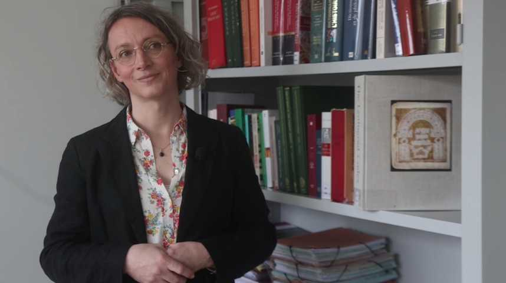

Organization Comitee
Pr. Frédérique Rey, biblical scholar and specialist in the possible applications of I/A to humanities.
S. Hayek, phD.
Featured speakers

G. Charbonnier
G. Charbonnier is a computer scientist from Grenoble: he is the lead tech at the QUARA startup, specialized in sensors collections and analysis.

C. Lemarinier
C. Lemarinier is a senior software developer at Atos-Bull, where she develops next generation supercomputers. She has a strong experience in API development, SQL and NoSQL database.

S. Garcia
S. Hayek
S. Hayek holds a PhD in computer science and has had several experience working on digital humanities project: analysis of similarities between the Septuagint and the New Testament, stemmatology of the Hebrew Bible...

F. Rey
F. Rey is a biblical scholar, leading several project in digital humanities.